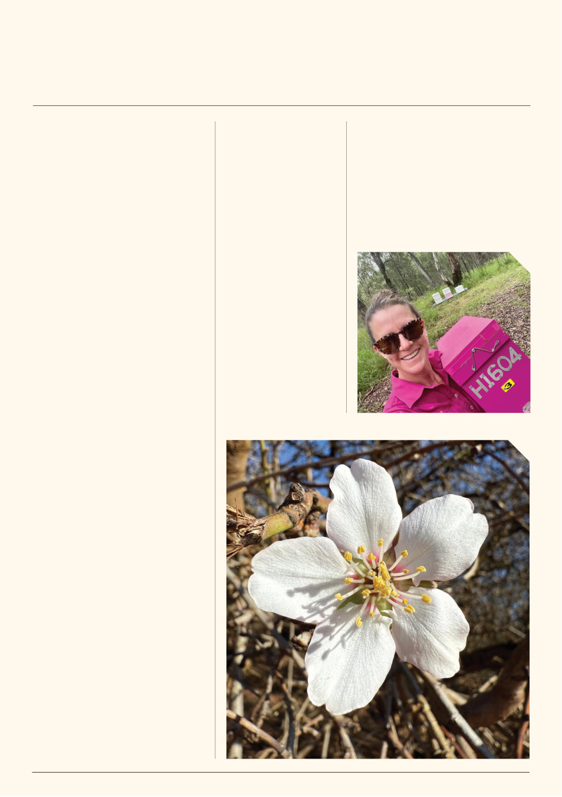

There is something quite extraordinary
about seeing an almond orchard in full
bloom for the first time and being a part
of the largest movement of livestock in the
Southern Hemisphere.
As a beekeeper from Far North Queensland,
I’ve spent years thinking about that moment.
Standing among thousands of flowering almond
trees in Victoria. It was a bucket-list experience
that certainly didn’t disappoint.
From above, the orchard seems almost
endless. Row after row of trees covered in
delicate white and pale pink blossom. From the
ground, it is breathtaking. A carpet of petals and
rows that can draw you in as if they lead to a
secret garden. It is truly spectacular.
I
couldn’t
help
but
be
completely
mesmerised, but I wasn’t just seeing flowers.
I was seeing an enormous food source, a huge
pollination opportunity and thousands upon
thousands of bees working the blossom.
One of the things I found particularly
fascinating was learning how closely pollen
production is linked to the rising sun, with the
morning light triggering the flowers to begin
releasing their pollen. As the day warms, the
bees get busy collecting that pollen throughout
the morning and into the early afternoon. Nectar
production, however, doesn’t start until the
flowers are warm, generally late morning. I found
the nectar had a surprisingly distinctive flavour —
freshly secreted nectar is sweet, bitter and acidic
with a clean and mildly cleansing finish.
Coming from the wet tropics, where the
conditions and pollination crops couldn’t be
more different, it was fascinating to learn about
the almonds and see colonies thriving despite
varroa mites’ presence.
I am yet to detect varroa in my colonies
back in Far North Queensland, but seeing
healthy, strong colonies being carefully managed
for varroa gave me a real appreciation for
the importance of staying vigilant and being
prepared.
It was also encouraging to hear how closely
farmers and beekeepers are working together so
that both parties achieve their desired outcome.
That kind of communication and cooperation
is essential for supporting healthy colonies,
effective pollination and productive orchards.
As beekeepers, we can’t afford to become
complacent. Varroa isn’t just a beekeeping issue.
What happens to our bees has a ripple effect
far beyond the hive — affecting the people who
rely on them for pollination, the crops they help
produce, and ultimately what we see available
(and pay for) at the checkout. Healthy bees
support healthy food systems.
A honey bee doesn’t know she’s providing
an essential agricultural service. She’s simply
out looking for food. And this is the part of
beekeeping I love. Watching bees do what they
do best, while knowing that their little daily
adventures have a much bigger impact than
they realise. For my first experience of almond
pollination, I couldn’t have asked for a more
beautiful classroom. Thousands of trees, millions
of flowers and a whole lot of fun with the bees
— what’s not to love?
A Bird’s-Eye View of Almond Pollination
My First Almond Orchard Experience
By Jana Hamilton, Chasing Flowers Apiaries
“I couldn’t help
but be completely
mesmerised, but I
wasn’t just seeing
flowers. I was
seeing an enormous
food source, a
huge pollination
opportunity and
thousands upon
thousands of bees
working the blossom.”
Jana Hamilton, Commercial Beekeeper,
Far North Queensland
VAA AUSTRALIAN BEE JOURNAL | VOL. 109 No. 09 September 2026 | 19
An Almond Blossom, by Lindsay Callaway